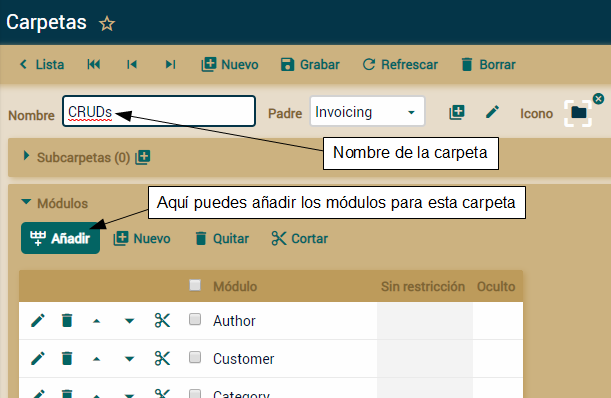
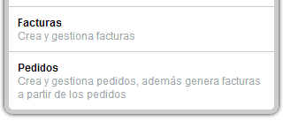

Navegación entre
módulos
Menús
En la izquierda tienes una lista con todos los módulos, pulsa uno para
abrirlo:

Carpetas
XavaPro
añade el módulo
Carpetas a tu aplicación, en la carpeta
Admin.
Este módulo te permite organizar los módulos del menú de manera
jerárquica.

Se trata de crear una nueva carpeta y asignarle algunos módulos. Si
quieres traducir el nombre de la carpeta, úsalo como clave en los archivos
i18n de etiquetas.
El menú jerárquico está disponible sólo en
XavaPro. El OpenXava normal usa una lista de módulos
con una caja de búsqueda.
Títulos
y descripciones para los módulos y la aplicación
Los títulos y descripciones se obtienen de los archivos i18n de tu
aplicación.
# EtiquetasMiAplicacion_es.properties
# Título y descripción de la aplicación
Facturacion=Facturacion
Facturacion[description]=Gestiona facturas y pedidos
# Títulos y descripciones de los módulos
Factura.module=Facturas
Factura.module[description]=Crea y gestiona facturas
Pedido.module=Pedidos
Pedido.module[description]=Crea y gestiona pedidos, además genera facturas a partir de los pedidos
Con la entradas de arriba OpenXava sabe como visualizar el nombre y la
descripción de los módulos
Factura y
Pedido en
español.

A partir de v6.0 la descripciones
de los módulos ya no se usan, en el menú sólo aparece el nombre de los
módulos, como se ve en el primer pantallazo de arriba del todo.
El nombre de la aplicación se
muestra en la esquina superior izquierda de la página:

Si no quieres mostrar el nombre de la aplicación añade la entrada
showApplicationName
(nueva en v5.5) en tu
naviox.properties (situado en la
carpeta
properties):
showApplicationName=false
Personalización
del comportamiento
Por defecto cuando el usuario entra empieza trabajando con el módulo con
el que se quedó la última vez. Para cambiar este comportamiento y empezar
siempre en la página
Primeros pasos añade la siguiente entrada a
naviox.properties (situado en la carpeta
properties):
startInLastVisitedModule=false
Si además quieres que la primera página al entrar no sea
Primero
pasos sino tu propia página o módulo, edita
firstSteps.jsp,
localizada en
web/naviox, borra su contenido y pon una
redirección en él, así:
<jsp:forward page="/m/MiModuloInicial"/>
Para que la lista de los últimos módulos visitados de la barra superior se
borre al iniciar sesión, añade la siguiente entrada en
naviox.properties:
# Hasta v5.9.1
rememberVisitedModules=false
La propiedad
rememberVisitedModules no está disponible desde la
versión 6.0.
Si quieres no mostrar la lista de módulos si el usuario no está
identificado, añade la siguiente entrada en
naviox.properties:
showModulesMenuWhenNotLogged=false
El el menú de módulos no se mostrará incluso si hay módulos disponible
para los usuarios no identificados.
Para tener ciertos módulos siempre presentes en el menú superior usa
fixModulesOnTopMenu
(nuevo en v5.9) en
naviox.properties:
fixModulesOnTopMenu=Invoice, Order
Como valor pon la lista de módulos separados por comas. Los módulos
estarán siempre presentes en la barra superior, a no ser que el usuario no
tenga permisos para acceder a ellos.